Context
Specialisms gives the page a specific angle instead of repeating the navigation label.
Expertise / 01
Expertise opens as a clear engineering decision hub: what Core offers, who it helps, why it matters, and which route to take first.
The first screen combines positioning, proof, primary action, and fast internal navigation, so people can act immediately or compare the rest of the expertise route with context.
Red-rule technical hero
Select the closest route and Core keeps the next step, proof, and follow-up expectation aligned with reliability and standards.
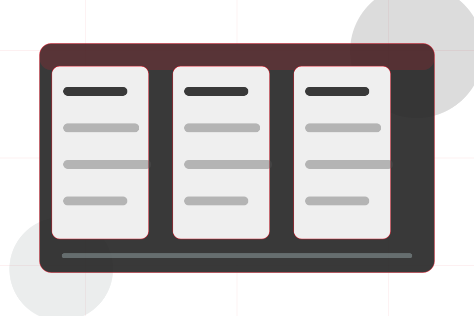
Expertise / 02
Specialisms adds technical context to the expertise route, using the engineering project journal structure to support reliability and standards before visitors choose a next step.
Core uses engineering proof cards and focused copy to make the decision easier to scan, aligning the section with reliability and standards rather than filling space.
Explore Expertise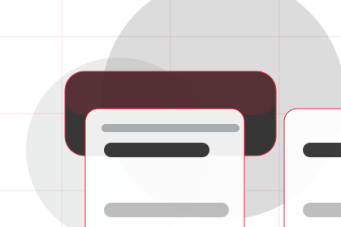
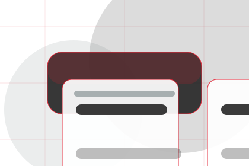
Specialisms gives the page a specific angle instead of repeating the navigation label.
Expertise / 03
Tools adds technical context to the expertise route, using the engineering project journal structure to support reliability and standards before visitors choose a next step.
Core uses engineering proof cards and focused copy to make the decision easier to scan, aligning the section with reliability and standards rather than filling space.
Explore ExpertiseTools gives the page a specific angle instead of repeating the navigation label.
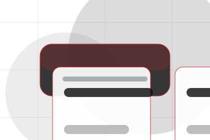
The engineering proof cards show what to compare, what to avoid, and what matters most for engineering, technical systems & specialist services visitors.
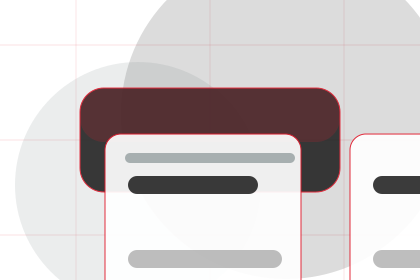
The final cue points to a useful internal route so the section keeps the journey moving.
Expertise / 04
Methods adds technical context to the expertise route, using the engineering project journal structure to support reliability and standards before visitors choose a next step.
Core uses engineering proof cards and focused copy to make the decision easier to scan, aligning the section with reliability and standards rather than filling space.
Explore ExpertiseMethods gives the page a specific angle instead of repeating the navigation label.
The engineering proof cards show what to compare, what to avoid, and what matters most for engineering, technical systems & specialist services visitors.
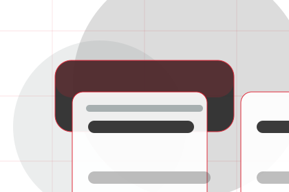
The final cue points to a useful internal route so the section keeps the journey moving.
Expertise / 05
Standards gives the proof layer for expertise: standards, evidence, and reassurance that make the next decision feel grounded.
Instead of relying on vague claims, Core presents visible standards, process cues, and proof artifacts that help engineering visitors judge fit.
Explore ExpertiseVisible proof that helps visitors believe the claims behind standards.
The quality, safety, or operating expectation this section makes explicit.
What becomes clearer before someone decides whether to ask an engineer.
Expertise / 06
Sectors adds technical context to the expertise route, using the engineering project journal structure to support reliability and standards before visitors choose a next step.
Core uses engineering proof cards and focused copy to make the decision easier to scan, aligning the section with reliability and standards rather than filling space.
Explore ExpertiseSectors gives the page a specific angle instead of repeating the navigation label.
The engineering proof cards show what to compare, what to avoid, and what matters most for engineering, technical systems & specialist services visitors.
The final cue points to a useful internal route so the section keeps the journey moving.
Expertise / 07
Credentials gives the proof layer for expertise: standards, evidence, and reassurance that make the next decision feel grounded.
Instead of relying on vague claims, Core presents visible standards, process cues, and proof artifacts that help engineering visitors judge fit.
Explore Expertise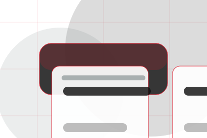
Visible proof that helps visitors believe the claims behind credentials.
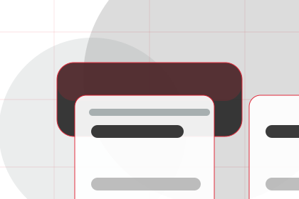
The quality, safety, or operating expectation this section makes explicit.
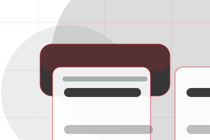
What becomes clearer before someone decides whether to ask an engineer.
Expertise / 08
Depth adds technical context to the expertise route, using the engineering project journal structure to support reliability and standards before visitors choose a next step.
Core uses engineering proof cards and focused copy to make the decision easier to scan, aligning the section with reliability and standards rather than filling space.
Explore ExpertiseDepth gives the page a specific angle instead of repeating the navigation label.
The engineering proof cards show what to compare, what to avoid, and what matters most for engineering, technical systems & specialist services visitors.
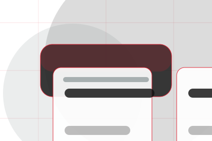
The final cue points to a useful internal route so the section keeps the journey moving.
Expertise / 09
Proof shows what changes after the work: clearer decisions, visible progress, and proof points that connect the offer to real outcomes.
The layout connects before-and-after thinking with measured outcomes, making the result easy to scan without promising what the business cannot guarantee.
Explore ExpertiseThe uncertainty, delay, or missed opportunity visitors bring into proof.
The clearer, safer, or more valuable state Core is designed to support.
The visible cue that connects proof to a believable decision, not a loose claim.
Expertise / 10
Core closes the expertise route with a clear action, a quick reminder of the value, and a low-friction way to ask an engineer.
Visitors who are ready can use the primary action. Visitors who are still comparing can scan the section links, proof, and support routes before they ask an engineer.
Ask EngineerThe final block keeps the choice simple: act now, compare one more proof route, or send enough detail for a focused response.
Ask Engineerreliability and standards
An engineering authority site with editorial project blocks, red rules, technical proof, and expert enquiry. Expertise ends with a direct path to ask an engineer, plus enough context for visitors who still need to compare.
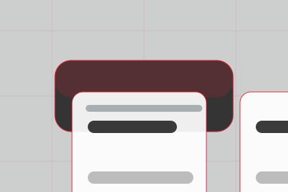
Ask EngineerInformation is provided for planning and should be reviewed for the final client, location, and operating rules.